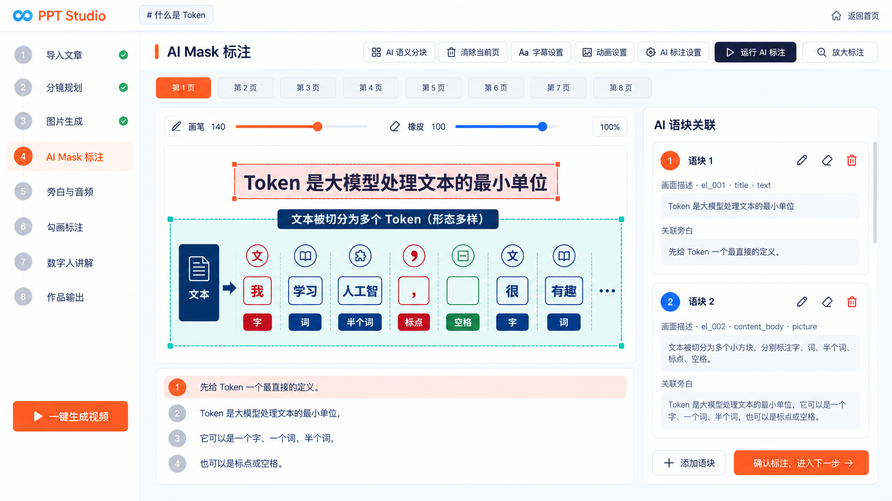

<!doctype html><html lang="zh-CN"><meta charset="utf-8"><meta name="viewport" content="width=device-width, initial-scale=1"><title>现有功能 UI 排布参考 · 修订版</title><style>*{box-sizing:border-box}body{margin:0;background:#f8fafc;color:#0f172a;font:14px/1.6 system-ui,"Microsoft YaHei",sans-serif}header{padding:16px 24px;background:white;border-bottom:1px solid #e2e8f0;position:sticky;top:0}h1{font-size:18px;margin:0 0 4px}p{margin:4px 0;color:#64748b}nav{display:flex;gap:8px;flex-wrap:wrap;margin-top:12px}button,a{font:inherit}button{padding:6px 14px;border:1px solid #e2e8f0;background:white;border-radius:8px;cursor:pointer;color:#475569}button[aria-pressed=true]{background:#ee5d36;color:white;border-color:#ee5d36}main{padding:20px;max-width:1800px;margin:auto}img{display:block;width:100%;height:auto;border:1px solid #e2e8f0;border-radius:10px}a{color:#c84d28}footer{margin-top:12px;display:flex;justify-content:space-between;gap:20px}#note{color:#475569}</style><header><h1>现有功能 UI 排布参考 · 修订版</h1><p>只调整排布与样式；公共侧栏、页签和尺寸以分镜规划为准。<a href="README.md">功能核对与图片偏差说明</a></p><nav><button data-index="0" aria-pressed="true">AI Mask 标注</button><button data-index="1" aria-pressed="false">旁白与音频</button><button data-index="2" aria-pressed="false">勾画标注</button><button data-index="3" aria-pressed="false">数字人讲解</button><button data-index="4" aria-pressed="false">作品输出</button></nav></header><main><footer><span id="note">画布与旁白在左，现有语块列表在右，可独立滚动。</span><a id="original" href="01-ai-mask.png" target="_blank">查看原图</a></footer></main><script>const pages=[{"title":"AI Mask 标注","file":"01-ai-mask.png"},{"title":"旁白与音频","file":"02-narration-audio.png"},{"title":"勾画标注","file":"03-handwritten-annotations.png"},{"title":"数字人讲解","file":"04-digital-human.png"},{"title":"作品输出","file":"05-output.png"}];const notes=["画布与旁白在左，现有语块列表在右，可独立滚动。","保留逐页纵向卡片：旁白输入、单独生成、页级普通音频播放器。","保留画布、讲稿关联、标注属性三栏；不新增播放时间轴。","保留素材、框选与缩放、六个参数三栏；此图是未上传状态。","保留视频作品卡片、语速操作与独立 PPTX 导出记录。"];document.querySelectorAll("nav button").forEach(button=>button.addEventListener("click",()=>{const i=Number(button.dataset.index);document.querySelectorAll("nav button").forEach(b=>b.setAttribute("aria-pressed",String(b===button)));document.getElementById("mockup").src=pages[i].file;document.getElementById("mockup").alt=pages[i].title+"修订版";document.getElementById("original").href=pages[i].file;document.getElementById("note").textContent=notes[i];}));</script></html>
